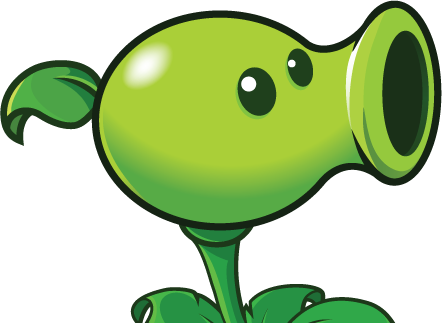
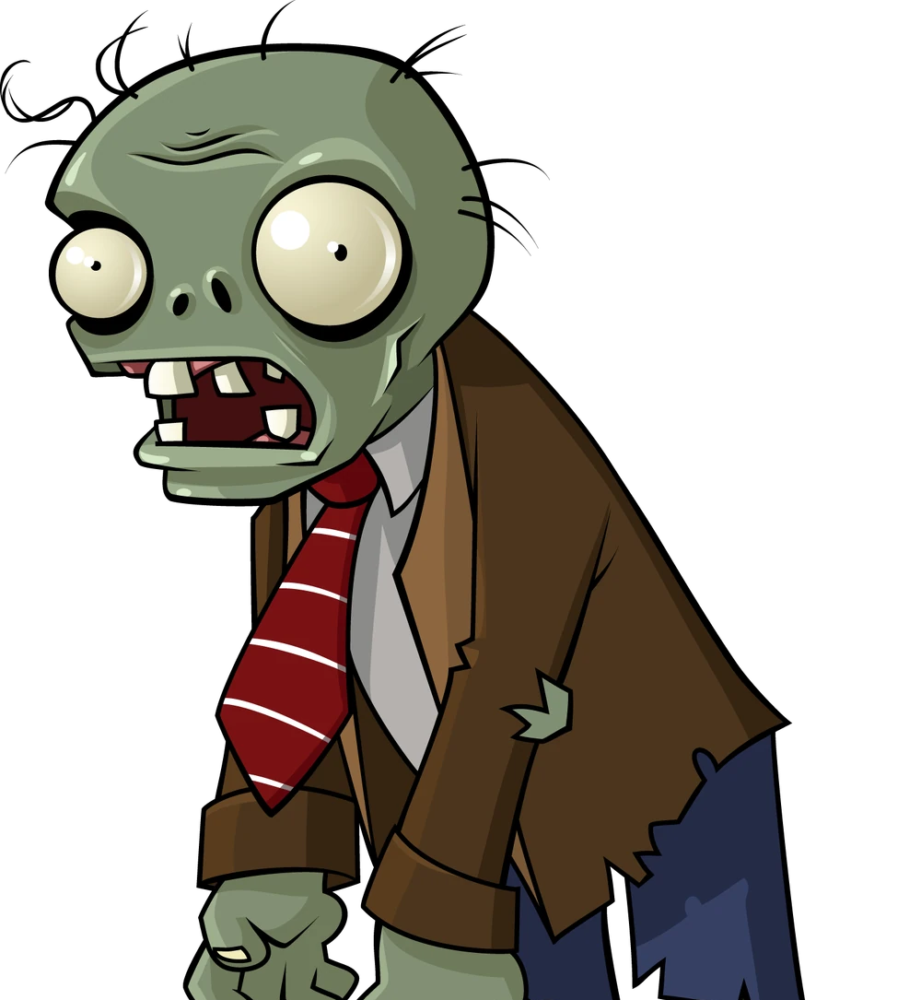

Conoce el mundo
Es una franquicia de videojuegos del género tower defense, desarrollado y publicado por PopCap Games en 2009.
El jugador asume el rol de propietario de una casa en medio de un apocalipsis zombi. A medida que los zombies se acercan hacia el jardín, el jugador debe defender su hogar colocando plantas.
